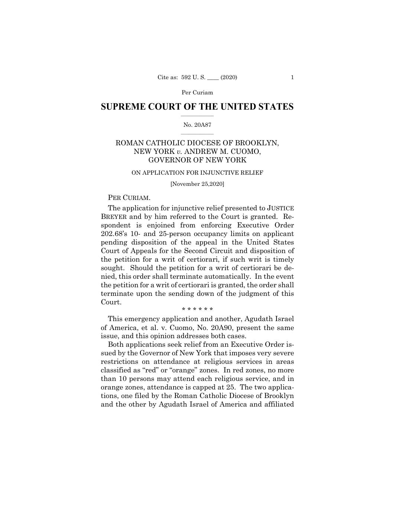

45:52 · 2 OPERE
Corte Suprema americana e padre Livio Fanzaga.
Il filo del discorso
Il relatore commenta la decisione americana del novembre 2020 sulle restrizioni ai luoghi di culto come segnale di resistenza costituzionale ai poteri di emergenza. Da qui sviluppa una critica delle dinastie politiche, della rappresentanza sociale e della uniformità che attribuisce alla stampa internazionale. Confronta il caso americano con una decisione portoghese sulla quarantena, legge un testo di Corona Transition e analizza vignette sulle mascherine come strumenti di pressione sul dissenso. La parte finale discute il modo in cui alcuni giornali presentarono le affermazioni di padre Livio Fanzaga, distinguendo la visione religiosa da una contestazione argomentata. Il tema unitario è il diritto di porre domande e cercare ragioni oltre le etichette. La scheda distingue questa posizione dalle effettive competenze dei tribunali, dalle conclusioni sanitarie e dalle accuse di manipolazione o frode, che richiedono riscontri autonomi.
I libri nel discorso

Roman Catholic Diocese of Brooklyn v. Cuomo — provvedimento del 25 novembre 2020
Prima pagina del provvedimento ufficiale: No. 20A87, 25 novembre 2020, opinion per curiam sulle richieste di ingiunzione; PDF ufficiale con opinioni concorrenti e dissenzienti. Prima pagina autentica del documento, non copertina commerciale.
Prima pagina del PDF ufficiale resa come immagine leggibile e controllata visivamente; documento giudiziario, senza inventare un libro o una copertina editoriale.
Decisione sul culto, Cuomo, novembre 2020 e voto 5–4: identificazione del provvedimento del 25 novembre, distinta dalla sua interpretazione estensiva.
Passaggio 0:51 ↗ · Fonti e libro ↗
Costituzione degli Stati Uniti d’America
Copertina della raccolta: Testo firmato il17settembre1787. Per l’immagine si usa la raccolta Penguin Classics The Federalist Papers, ISBN9780140444957, che dichiara di includere il testo della Costituzione; non è una fotografia della pergamena originaria.
Copertina autentica di The Federalist Papers: la descrizione editoriale attesta che la raccolta comprende il testo completo della Costituzione. Non è il frontespizio costituzionale del1787 e Hamilton, Madison e Jay non sono presentati come unici autori del documento.
Il controllo degli ordini esecutivi e dei diritti costituzionali richiama esplicitamente la Costituzione americana; qui è rilevante il Primo emendamento.
Passaggio 9:54 ↗ · Fonti e libro ↗